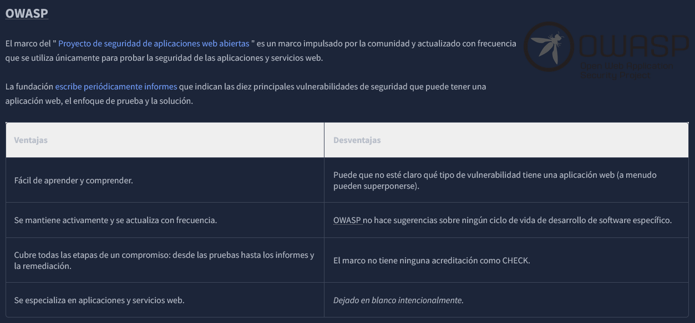

Las pruebas de penetración pueden tener una amplia variedad de objetivos y metas dentro de su alcance. Por ello, ninguna prueba de penetración es igual a otra, y no existe una solución universal en cuanto a cómo un evaluador de penetración debe abordarla. Los pasos que sigue un evaluador de penetración durante una intervención se conocen como metodología. Una metodología práctica es inteligente, ya que los pasos son relevantes para la situación en cuestión. Por ejemplo, tener una metodología que se usaría para probar la seguridad de una aplicación web no es práctico cuando se trata de probar la seguridad de una red.
Antes de analizar algunas metodologías estándar de la industria, debemos tener en cuenta que todas ellas tienen un tema general de las siguientes etapas:
